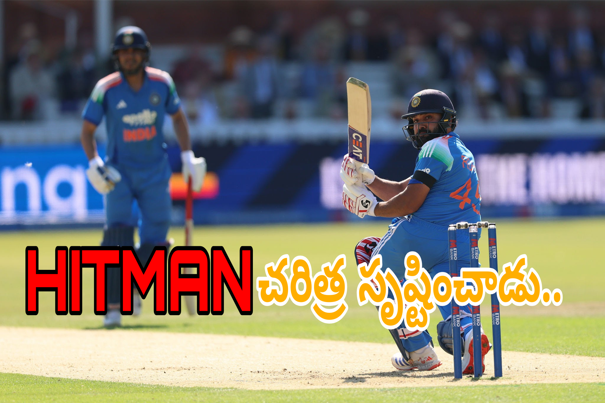

న్యూ చండీగఢ్: భారత క్రికెట్లో ‘హిట్మ్యాన్’గా అభిమానుల చేత పిలిపించుకునే రోహిత్ శర్మ మరోసారి చరిత్ర సృష్టించాడు. వన్డే క్రికెట్లో ఓపెనర్గా 10 వేల పరుగుల మైలురాయిని అందుకుని తన పేరును మరోసారి రికార్డుల పుస్తకాల్లో లిఖించుకున్నాడు. వెస్టిండీస్తో జరుగుతున్న మూడు వన్డేల సిరీస్లో భాగంగా శనివారం న్యూ చండీగఢ్లో జరిగిన మూడో వన్డేలో ఈ అరుదైన ఘనతను రోహిత్ అందుకున్నాడు. కేవలం రెండు పరుగులు చేస్తే 10 వేల పరుగుల మార్క్ చేరుకునే స్థితిలో బరిలోకి దిగిన రోహిత్.. తొలి ఓవర్లోనే ఆ మైలురాయిని అందుకున్నాడు. దీంతో వన్డేల్లో ఓపెనర్గా 10 వేల పరుగులు చేసిన ప్రపంచంలోని నాలుగో బ్యాటర్గా నిలిచాడు. భారత్ తరఫున ఈ ఘనత సాధించిన రెండో ఆటగాడిగా రికార్డు సృష్టించాడు.
రోహిత్ శర్మకు ఈ మైలురాయి మరింత ప్రత్యేకంగా మారింది. ఓపెనర్గా అతను సాధించిన పరుగులు కేవలం గణాంకం మాత్రమే కాదు.. భారత వన్డే క్రికెట్లో దాదాపు దశాబ్దానికి పైగా కొనసాగిన అతని ప్రభావానికి ఇది మరో గుర్తింపు. పవర్ప్లేలో బౌలర్లపై ఒత్తిడి పెంచడం, భారీ షాట్లు ఆడటం, ఎక్కువసేపు క్రీజులో నిలిస్తే భారీ స్కోర్లుగా మార్చడం రోహిత్ బ్యాటింగ్లో కనిపించే ప్రధాన లక్షణాలుగా మారాయి.
మూడో వన్డేకు ముందు రోహిత్ ఓపెనర్గా 10 వేల పరుగుల మైలురాయికి కేవలం రెండు పరుగుల దూరంలో ఉన్నాడు. దీంతో మ్యాచ్ ప్రారంభమైనప్పటి నుంచే అభిమానుల దృష్టి అతని బ్యాటింగ్పైనే నిలిచింది. భారత జట్టు తరఫున శుభ్మన్ గిల్తో కలిసి ఇన్నింగ్స్ ప్రారంభించిన రోహిత్.. అవసరమైన రెండు పరుగులను సాధించడంతో స్టేడియంలో ప్రత్యేకమైన వాతావరణం నెలకొంది.

రెండో వన్డేలో శతకం.. మూడో వన్డేలో రికార్డు
వెస్టిండీస్తో జరుగుతున్న ఈ సిరీస్ రోహిత్ శర్మకు ప్రత్యేకంగా మారింది. తొలి వన్డేలో పెద్ద స్కోరు చేయకపోయినా, రెండో వన్డేలో మాత్రం తన అసలు బ్యాటింగ్ సత్తాను చూపించాడు. గువాహటిలో జరిగిన రెండో వన్డేలో రోహిత్ శర్మ అద్భుతమైన శతకంతో మెరిశాడు. కేవలం 72 బంతుల్లోనే సెంచరీ పూర్తి చేసి వన్డేల్లో తన 35వ శతకాన్ని నమోదు చేశాడు. ఆ ఇన్నింగ్స్లో 10 ఫోర్లు, 6 సిక్సర్లు బాదిన రోహిత్.. భారత జట్టు భారీ లక్ష్యాన్ని ఛేదించడంలో కీలక పాత్ర పోషించాడు.
అదే మ్యాచ్లో రోహిత్ వన్డేల్లో 12 వేల పరుగుల మైలురాయిని కూడా అందుకున్నాడు. భారత క్రికెట్లో ఈ ఘనత సాధించిన మూడో ఆటగాడిగా నిలిచాడు. అంతకుముందు సచిన్ టెండూల్కర్, విరాట్ కోహ్లీ ఈ మైలురాయిని అందుకున్నారు. దీంతో రోహిత్ కెరీర్లో మరో భారీ అధ్యాయం చేరింది.
ఇక ఆ శతకంతో వచ్చిన ఉత్సాహాన్ని మూడో వన్డేలో కూడా కొనసాగించాడు. ఈ మ్యాచ్లో రోహిత్కు మరో ప్రత్యేక లక్ష్యం ముందే ఉంది. ఓపెనర్గా 10 వేల పరుగులు పూర్తి చేయడానికి అతనికి కేవలం రెండు పరుగులే అవసరమయ్యాయి. దీంతో మ్యాచ్ ప్రారంభం నుంచే క్రికెట్ అభిమానుల దృష్టి రోహిత్ బ్యాటింగ్పైనే నిలిచింది.
తొలి ఓవర్లోనే రికార్డు
మూడో వన్డేలో భారత్ టాస్ గెలిచి ముందుగా బ్యాటింగ్ ఎంచుకుంది. రోహిత్ శర్మతో కలిసి కెప్టెన్ శుభ్మన్ గిల్ ఇన్నింగ్స్ ప్రారంభించాడు. వెస్టిండీస్ పేసర్ జేడెన్ సీల్స్ బౌలింగ్లో తొలి ఓవర్ ప్రారంభమైన వెంటనే రోహిత్ జాగ్రత్తగా బ్యాటింగ్ చేశాడు.
తొలి బంతులను పరిశీలించిన రోహిత్.. ఆ తర్వాత వచ్చిన బంతిని మిడ్వికెట్ వైపు ఫ్లిక్ చేసి రెండు పరుగులు సాధించాడు. ఆ రెండు పరుగులతోనే అతని ఓపెనింగ్ పరుగుల సంఖ్య 10 వేల మార్క్ను దాటింది. దీంతో మైదానంలో ప్రత్యేకమైన వాతావరణం కనిపించింది. భారత బ్యాటర్ సాధించిన ఈ అరుదైన మైలురాయికి అభిమానులు, సహచర ఆటగాళ్లు అభినందనలు తెలిపారు.
సచిన్ టెండూల్కర్ రికార్డు బద్దలు
రోహిత్ శర్మ సాధించిన ఈ రికార్డులో మరో ప్రత్యేకత ఉంది. ఓపెనర్గా అత్యంత వేగంగా 10 వేల వన్డే పరుగులు చేసిన బ్యాటర్గా ఇప్పటివరకు సచిన్ టెండూల్కర్ పేరిట ఉన్న రికార్డును రోహిత్ అధిగమించాడు.
సచిన్ టెండూల్కర్ 214 ఇన్నింగ్స్లలో ఓపెనర్గా 10 వేల పరుగుల మార్క్ను చేరుకున్నాడు. రోహిత్ మాత్రం అంతకంటే తక్కువ ఇన్నింగ్స్ల్లోనే ఈ ఘనత సాధించాడు. అందువల్ల వన్డే క్రికెట్లో ఓపెనర్గా వేగంగా 10 వేల పరుగులు పూర్తి చేసిన బ్యాటర్గా రోహిత్ పేరు నిలిచింది.
ఈ రికార్డుతో రోహిత్ మరోసారి సచిన్ టెండూల్కర్తో తన పేరును ఒకే రికార్డు జాబితాలో నిలబెట్టుకున్నాడు. భారత క్రికెట్లో సచిన్ తర్వాత ఓపెనర్గా 10 వేల వన్డే పరుగులు చేసిన బ్యాటర్గా రోహిత్ నిలవడం అతని కెరీర్లో మరో పెద్ద అధ్యాయంగా మారింది.
ప్రపంచ క్రికెట్లో నాలుగో బ్యాటర్
వన్డేల్లో ఓపెనర్గా 10 వేల పరుగులు సాధించడం సాధారణ విషయం కాదు. ప్రపంచ క్రికెట్లో ఇప్పటివరకు కొద్దిమంది మాత్రమే ఈ ఘనతను సాధించారు. సచిన్ టెండూల్కర్, శ్రీలంక దిగ్గజం సనత్ జయసూర్య, వెస్టిండీస్ మాజీ విధ్వంసకర ఓపెనర్ క్రిస్ గేల్ తర్వాత ఈ జాబితాలో రోహిత్ శర్మ చేరాడు.
సచిన్ ఓపెనర్గా 15,310 పరుగులతో ఈ జాబితాలో అగ్రస్థానంలో ఉన్నాడు. సనత్ జయసూర్య 12,740 పరుగులతో తర్వాతి స్థానంలో ఉండగా, క్రిస్ గేల్ 10,179 పరుగులతో ఉన్నాడు. ఇప్పుడు రోహిత్ కూడా 10 వేల మార్క్ను దాటడంతో ఈ ప్రత్యేకమైన క్లబ్లో నాలుగో సభ్యుడిగా నిలిచాడు.
ఈ గణాంకాలను పరిశీలిస్తే వన్డే క్రికెట్లో ఓపెనర్గా రోహిత్ ఎంతటి ప్రభావం చూపించాడో అర్థమవుతుంది. ముఖ్యంగా పవర్ప్లేలో భారీ షాట్లు ఆడటం, బౌలర్లపై ఒత్తిడి పెంచడం, భారీ ఇన్నింగ్స్లు ఆడటం రోహిత్ బ్యాటింగ్ శైలిలో ప్రధాన లక్షణాలుగా మారాయి.
మూడు డబుల్ సెంచరీలు.. ఎన్నో రికార్డులు
వన్డేల్లో రోహిత్ శర్మ ప్రయాణం ఇప్పటికే ఎన్నో రికార్డులతో నిండిపోయింది. ప్రపంచ క్రికెట్లో వన్డేల్లో మూడు డబుల్ సెంచరీలు చేసిన ఏకైక బ్యాటర్గా రోహిత్ పేరు ప్రత్యేకంగా నిలిచింది.
2013లో ఆస్ట్రేలియాపై 209 పరుగులు చేసిన రోహిత్.. 2014లో శ్రీలంకపై 264 పరుగులతో ప్రపంచ రికార్డు నెలకొల్పాడు. ఆ తర్వాత 2017లో మరోసారి శ్రీలంకపైనే 208 పరుగులతో నాటౌట్గా నిలిచాడు. వన్డేల్లో ఒక బ్యాటర్ వ్యక్తిగతంగా సాధించిన అత్యధిక స్కోర్లలో 264 పరుగుల ఇన్నింగ్స్ రోహిత్ కెరీర్లో అత్యంత ప్రత్యేకమైన ఇన్నింగ్స్లలో ఒకటిగా నిలిచింది.
ఇలాంటి రికార్డుల మధ్య ఇప్పుడు ఓపెనర్గా 10 వేల పరుగుల మైలురాయి కూడా చేరడంతో రోహిత్ వన్డే కెరీర్లో మరో ముఖ్యమైన మైలురాయి చేరింది.
రెండో వన్డేలో మరో పెద్ద మైలురాయి
వెస్టిండీస్తో రెండో వన్డేలో రోహిత్ చేసిన 101 పరుగుల ఇన్నింగ్స్ కూడా ఈ సిరీస్లో కీలక ఘట్టంగా నిలిచింది. ఆ మ్యాచ్లో వెస్టిండీస్ తొలుత 405 పరుగుల భారీ స్కోరు చేసింది. దానికి సమాధానంగా భారత్ 406 పరుగుల లక్ష్యాన్ని ఛేదించింది.
భారత్ తరఫున శుభ్మన్ గిల్ 223 పరుగులతో చరిత్ర సృష్టించగా, రోహిత్ 101 పరుగులతో అద్భుత సహకారం అందించాడు. వీరిద్దరూ కలిసి భారీ ఓపెనింగ్ భాగస్వామ్యాన్ని నెలకొల్పారు. చివరకు భారత్ లక్ష్యాన్ని విజయవంతంగా ఛేదించింది.
ఆ మ్యాచ్లోనే రోహిత్ వన్డే కెరీర్లో 12 వేల పరుగుల మార్క్ను కూడా దాటాడు. దీంతో భారత క్రికెట్లో 12 వేల వన్డే పరుగులు సాధించిన మూడో ఆటగాడిగా నిలిచాడు. అంతకుముందు సచిన్ టెండూల్కర్, విరాట్ కోహ్లీ ఈ ఘనత సాధించారు.
రోహిత్-గిల్ జోడీపై మరోసారి దృష్టి
రోహిత్ శర్మ ఈ రికార్డు సాధించిన సందర్భంలో శుభ్మన్ గిల్ పేరు కూడా ప్రత్యేకంగా ప్రస్తావించాల్సిందే. గత కొంతకాలంగా భారత వన్డే బ్యాటింగ్లో గిల్ కీలక పాత్ర పోషిస్తున్నాడు. వెస్టిండీస్తో రెండో వన్డేలో అతని 223 పరుగుల ఇన్నింగ్స్ భారత విజయానికి ప్రధాన కారణాల్లో ఒకటిగా నిలిచింది.
ఇలాంటి ప్రదర్శనల మధ్య రోహిత్ అనుభవం, గిల్ దూకుడు కలిసినప్పుడు భారత టాప్ ఆర్డర్కు బలమైన రూపం కనిపిస్తోంది. ఒకవైపు రోహిత్ బౌలర్లపై ఒత్తిడి పెంచగలడు. మరోవైపు గిల్ కూడా వేగంగా పరుగులు సాధించే సామర్థ్యాన్ని చూపిస్తున్నాడు.
2027 ప్రపంచకప్ దిశగా కీలక సంకేతాలు
రోహిత్ శర్మ భవిష్యత్ వన్డే కెరీర్పై చర్చలు జరుగుతున్న సమయంలో ఈ ప్రదర్శనలు రావడం మరింత ఆసక్తికరంగా మారింది. 2027 వన్డే ప్రపంచకప్ను దృష్టిలో పెట్టుకుని రోహిత్, విరాట్ కోహ్లీ వంటి అనుభవజ్ఞుల ఆటపై క్రికెట్ అభిమానుల్లో ఆసక్తి ఉంది.
అయితే ప్రస్తుతం రోహిత్ తన బ్యాటింగ్తోనే సమాధానం ఇస్తున్నాడు. రెండో వన్డేలో సెంచరీ, మూడో వన్డేలో ఓపెనర్గా 10 వేల పరుగుల మైలురాయి.. వరుసగా వచ్చిన ఈ రెండు ఘనతలు అతని వన్డే ఫామ్పై దృష్టిని మరింత పెంచాయి.
ఇదే సమయంలో భారత జట్టు భవిష్యత్ నిర్మాణంలో యువ ఆటగాళ్లకు కూడా ప్రాధాన్యం పెరుగుతోంది. అందువల్ల రోహిత్ అనుభవం, యువ ఆటగాళ్ల ఉత్సాహం రెండూ కలిసి భారత వన్డే జట్టుకు ఎలా ఉపయోగపడతాయనేది రాబోయే కాలంలో కీలక అంశంగా మారనుంది.
రికార్డుల వెనుక ఉన్న స్థిరత్వం
రోహిత్ శర్మ 10 వేల ఓపెనింగ్ పరుగులు సాధించడం ఒక్క మ్యాచ్ ఫలితం కాదు. దాదాపు దశాబ్దానికి పైగా కొనసాగిన స్థిరమైన వన్డే కెరీర్ ఫలితమే ఈ మైలురాయి.
2013లో ఓపెనర్గా ప్రమోట్ అయిన తర్వాత రోహిత్ తన బ్యాటింగ్ శైలినే మార్చుకున్నాడు. మొదట్లో మిడిల్ ఆర్డర్లో ఆడిన రోహిత్.. ఓపెనర్గా వచ్చిన తర్వాత భారీ ఇన్నింగ్స్లు ఆడే బ్యాటర్గా ఎదిగాడు. కొత్త బంతిని ఎదుర్కొంటూ మొదట పరిస్థితులను అంచనా వేసి, ఆ తర్వాత బౌలర్లపై దాడి చేయడం అతని బ్యాటింగ్లో కనిపించే ప్రత్యేకత.
ముఖ్యంగా వన్డేల్లో 50 ఓవర్ల ఇన్నింగ్స్ను పరిస్థితులకు అనుగుణంగా నిర్మించడంలో రోహిత్కు మంచి పేరు ఉంది. ప్రారంభంలో జాగ్రత్తగా ఆడి, తర్వాత బౌండరీలతో వేగాన్ని పెంచడం అతని బ్యాటింగ్లో ఎన్నోసార్లు కనిపించింది.
అభిమానుల్లో సంబరాలు
రోహిత్ శర్మ ఈ రికార్డు సాధించడంతో అభిమానుల్లో ఉత్సాహం కనిపించింది. సచిన్ టెండూల్కర్ తర్వాత భారత క్రికెట్లో ఓపెనర్గా 10 వేల పరుగులు సాధించిన బ్యాటర్గా రోహిత్ నిలవడం అభిమానులకు ప్రత్యేకంగా మారింది.
ఒకే సమయంలో వన్డేల్లో 12 వేల పరుగులు, ఓపెనర్గా 10 వేల పరుగులు, 35 సెంచరీలు వంటి మైలురాళ్లను తన కెరీర్లో నమోదు చేసుకోవడం రోహిత్ శర్మ వన్డే ప్రయాణంలో ప్రత్యేకమైన ఘట్టంగా నిలిచింది.
ముగింపు
వెస్టిండీస్తో మూడో వన్డేలో రోహిత్ శర్మ సాధించిన రెండు పరుగులు స్కోర్బోర్డుపై చిన్న సంఖ్యలా కనిపించవచ్చు. కానీ ఆ రెండు పరుగుల వెనుక ఒక భారీ క్రికెట్ ప్రయాణం ఉంది. ఆ రెండు పరుగులతోనే ఓపెనర్గా 10 వేల వన్డే పరుగుల మైలురాయిని అందుకున్న రోహిత్.. సచిన్ టెండూల్కర్ రికార్డును అధిగమించి వేగవంతమైన ఓపెనర్గా చరిత్ర సృష్టించాడు.
సచిన్ టెండూల్కర్, సనత్ జయసూర్య, క్రిస్ గేల్ వంటి దిగ్గజాలతో కూడిన అరుదైన జాబితాలో రోహిత్ శర్మ చేరాడు. ఇప్పటికే వన్డేల్లో మూడు డబుల్ సెంచరీలు, 35 సెంచరీలు, 12 వేల పరుగుల వంటి ఘనతలు సాధించిన రోహిత్ కెరీర్లో ఇది మరో ప్రత్యేక అధ్యాయంగా నిలిచింది.
వెస్టిండీస్ సిరీస్లో రెండో వన్డేలో సెంచరీ చేసి 12 వేల పరుగుల మార్క్ దాటిన రోహిత్.. మూడో వన్డేలో కేవలం రెండు పరుగులతో మరో చరిత్ర సృష్టించడం విశేషం. భారత వన్డే క్రికెట్లో రోహిత్ శర్మ ప్రయాణం ఇంకా అభిమానులను ఆకట్టుకుంటూనే ఉంది. 2027 ప్రపంచకప్ దిశగా భారత వన్డే జట్టు ప్రయాణం కొనసాగుతున్న వేళ.. రోహిత్ బ్యాట్ నుంచి ఇలాంటి మైలురాళ్లు రావడం క్రికెట్ ప్రపంచంలో ఆసక్తిని పెంచుతోంది.
రోహిత్ శర్మకు ఇది మరో రికార్డు మాత్రమే కాదు.. వన్డే క్రికెట్లో ఓపెనర్గా అతను నిర్మించుకున్న సుదీర్ఘ ప్రయాణానికి మరో గుర్తింపు.